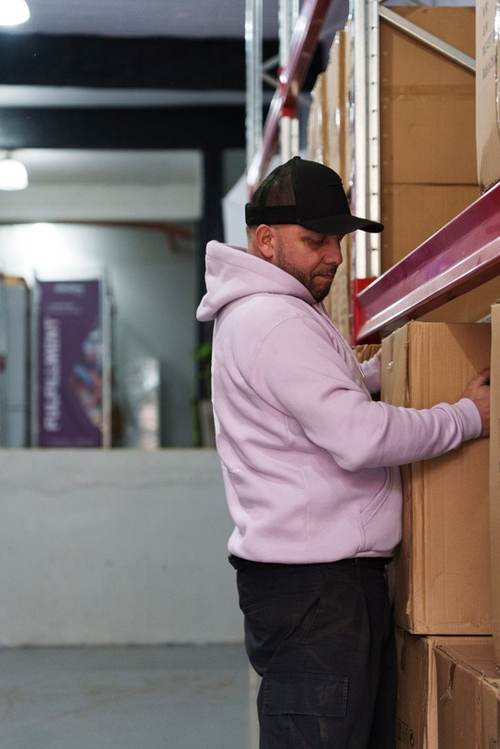
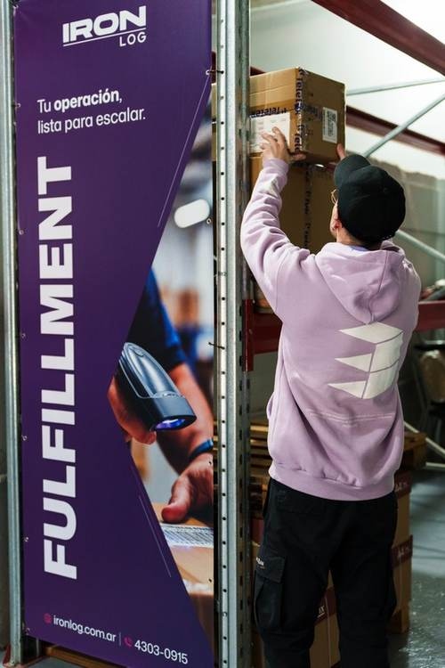

Transformamos la logística en una ventaja para tu negocio.

Recibí, almacená y distribuí tu mercadería sin invertir en infraestructura propia.

Nos ocupamos de cada etapa del proceso, desde la recepción de la mercadería hasta su distribución.


| Concepto | Valor |
|---|
Consultá el tarifario de última milla, con precio por zona y barrio, o pedí una cotización exclusiva.